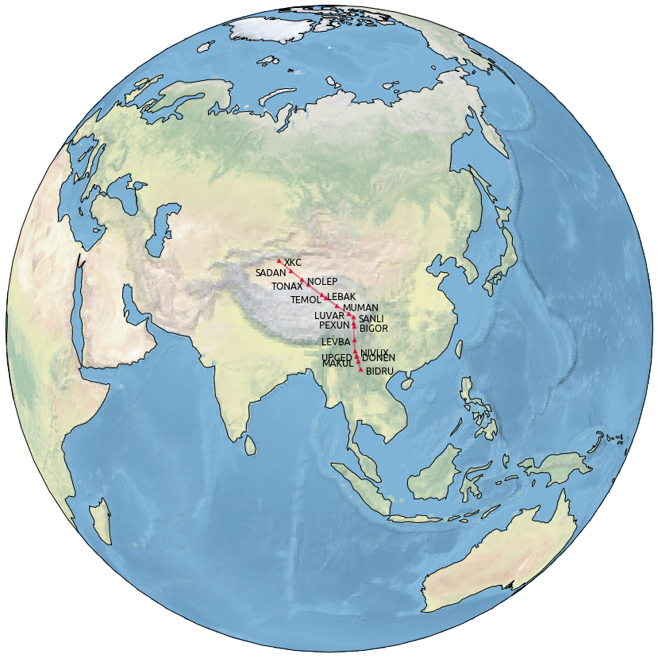

Airways, ATS routes¶
- class traffic.data.basic.airways.Airways(data: Optional[pandas.DataFrame] = None)¶
An ATS route is a specified route designed for channelling the flow of traffic as necessary for the provision of air traffic services.
The term “ATS route” is used to mean variously, airway, advisory route, controlled or uncontrolled route, arrival or departure route, etc.
An ATS route is defined by route specifications which include an ATS route designator, the track to or from significant points (waypoints), distance between significant points, reporting requirements and, as determined by the appropriate ATS authority, the lowest safe altitude. (ICAO Annex 11 - Air Traffic Services)
A (deprecated) database of world ATS routes is available as:
>>> from traffic.data import airways
Any ATS route can be accessed by the bracket notation:
>>> airways['UN869'] UN869 (FTV, RUSIK, ADM, MABAP, PELAX, SLK, RBT, GALTO, PIMOS, MGA, BLN, ANZAN, NASOS, ADUXO, EDIMU, PISUS, EXEMU, ZAR, ELSAP, XOMBO, TIVLI, AGN, NARAK, NASEP, ROMAK, MINSO, MOKDI, LERGA, TITVA, REPSI, MEBAK, NINTU, MILPA, GVA10, VEROX, NEMOS, BENOT, LUTIX, OLBEN, RINLI, NATOR, TEDGO, GUPIN, DKB, ODEGU, AMOSA, KEGOS, ANELA, KEPOM, NOGRA, RONIG, OKG)
Note
The following snippet plots the (in)famous Silk Road Airway (L888) over the Himalaya mountains, which requires special qualifications.
>>> from traffic.data import navaids >>> from traffic.drawing import Orthographic >>> with plt.style.context("traffic"): ... fig, ax = plt.subplots( ... 1, figsize=(15, 15), ... subplot_kw=dict(projection=Orthographic(95, 30)) ... ) ... ax.stock_img() ... ax.coastlines() ... ... airways["L888"].plot( ... ax, linewidth=2, linestyle="solid", color="crimson" ... ) ... ... for i, name in enumerate(airways["L888"].navaids): ... navaids[name].plot(ax, s=20, marker="^", color="crimson")
- global_get(name: str) Optional[traffic.core.structure.Route]¶
Search for a route from all alternative data sources.
- search(name: str) traffic.data.basic.airways.Airways¶
Selects the subset of airways matching name in the route name or in the passed navigational beacon.
>>> airways.extent('Switzerland').search("Z50") route id navaid lat lon 101157 Z50 7 GERSA 47.039375 8.532114 101158 Z50 8 KELIP 46.956194 8.761667 101159 Z50 9 SOPER 46.889444 8.944444 101160 Z50 10 PELAD 46.598889 9.725833 101161 Z50 11 RESIA 46.478333 10.043333
- through(name: str) List[traffic.core.structure.Route]¶
Selects all routes going through the given navigational beacon.
>>> airways.through('NARAK') [N869 (ROMAK, NASEP, NARAK), UN859 (PUMAL, ROCAN, LOMRA, GAI, NARAK, EVPOK, BALAN, AMB), UN869 (ELSAP, XOMBO, TIVLI, AGN, NARAK, NASEP, ROMAK, MINSO, MOKDI), UT122 (SECHE, NARAK, DITEV), UY155 (ETENU, NARAK), UZ365 (DIRMO, GUERE, NARAK)]
{kind=link}